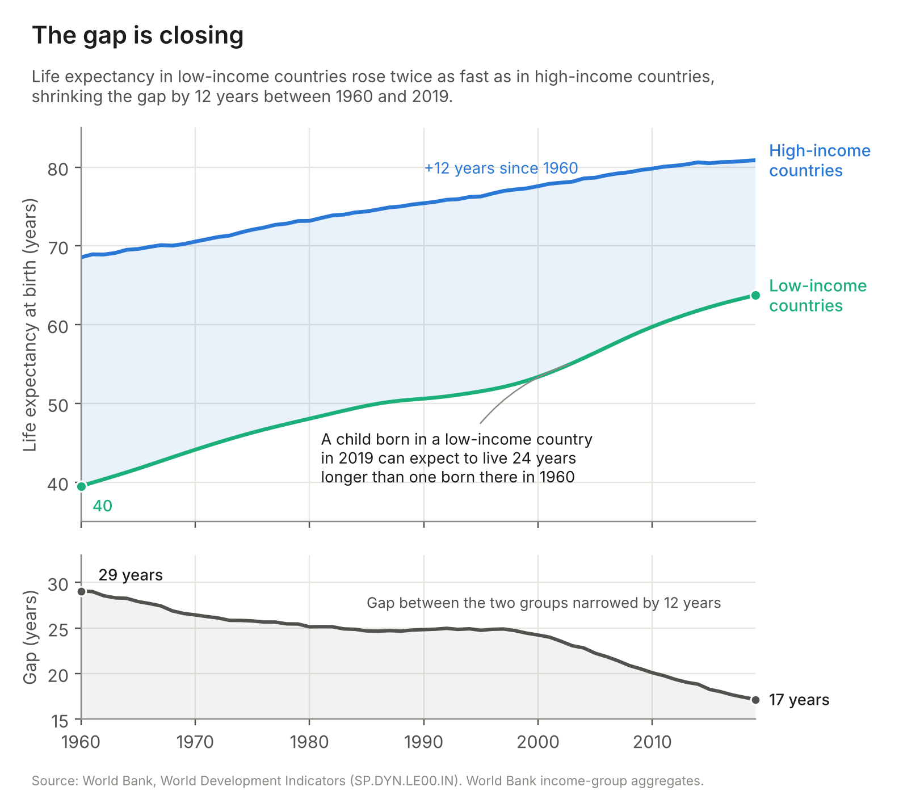
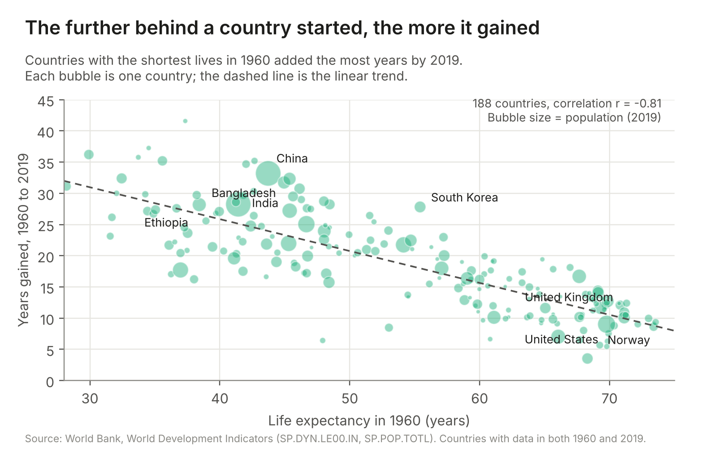
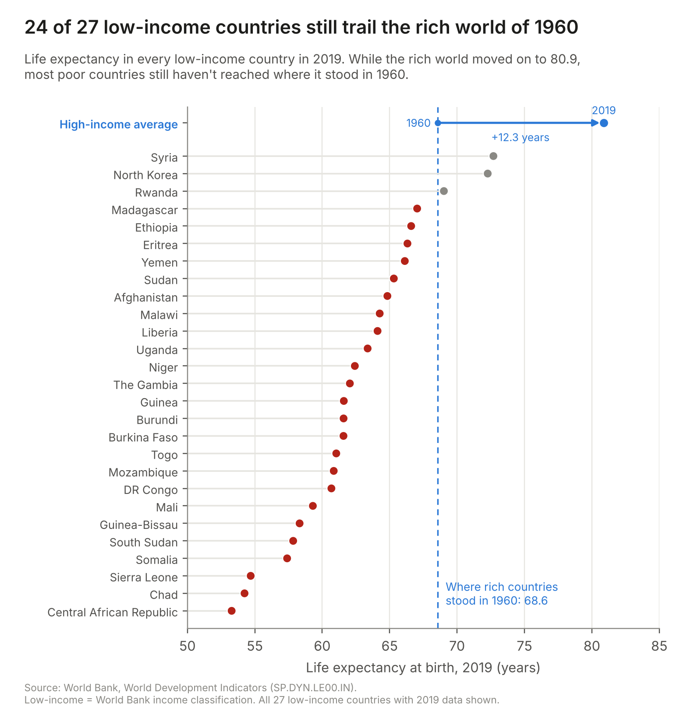
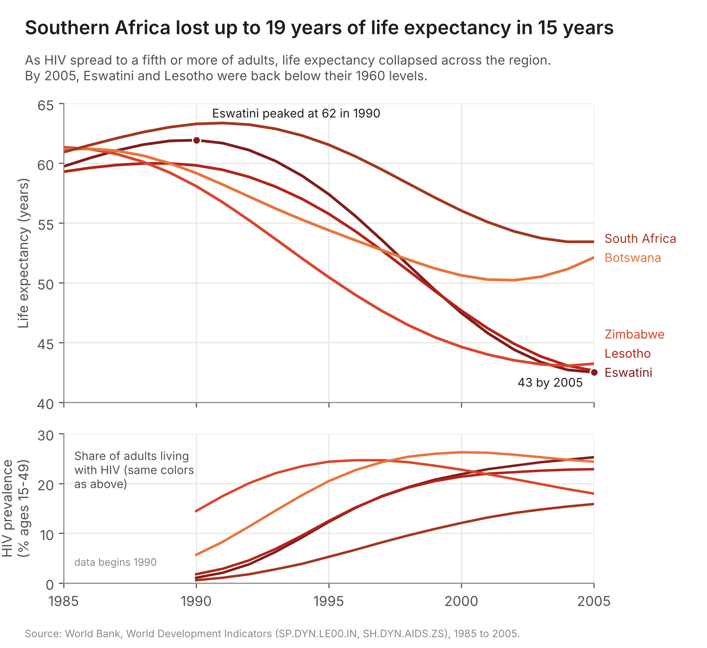

Has life expectancy converged between rich and poor countries?
Two visualizations use the same World Bank indicator, with one making the case for "yes" and the other making the case for "no." Under each visualization, I explain the design choices that make the argument more persuasive and score each choice from −2 (fully deceptive) to +2 (fully earnest).
Visualization 1: The poorest countries are catching up


Design decisions
| Decision | Score | Rationale |
|---|---|---|
| Frame the gain in human terms and lead with the absolute gap in years | +1 | I calculated the gain for each group (+24 vs. +12 years) and the gap between them (29.1 years in 1960 and 17.2 in 2019), then turned the low-income gain into a sentence about a child born in 2019. This uses the idea from the affective visualization readings (Lan et al.; Lee-Robbins and Adar) that the same number can feel different depending on how it is presented. The numbers themselves are accurate, and the title "The gap is closing" only says that the gap is getting smaller, not that the groups have reached the same level. I did not give it a full +2 because the averages hide countries that actually went backward, and the green line for low-income countries can also make the increase look more positive than it is. |
| Plot only the 1960 and 2019 endpoints in the scatter | −1.5 | Panel 1b reduces 60 years of data to one number per country: the total years gained. That means a country like Zimbabwe, which lost 18 years during the AIDS epidemic and later recovered, can look like it had a fairly steady increase. The part of the trajectory that would most challenge my argument is never shown. This is subtle because the scatter includes all 188 countries with data, so it looks comprehensive. The missing information is in the time dimension, not the countries. I chose this instead of the checkpoint's slope chart, which had the same endpoint problem along with obvious cherry-picking. |
| Present a negative correlation (r = −0.81) as evidence of catching up | −1 | It is true that countries with lower life expectancy in 1960 tended to gain more years. The trend line and correlation coefficient make this look like strong statistical evidence of convergence. But part of the relationship is mechanical. A country like Norway, starting at 73 years in 1960, had much less room to gain 35 more years than a country starting much lower. So the negative relationship is partly a ceiling effect and regression toward the mean, rather than direct proof that poorer countries are catching up. Someone familiar with the economics literature on beta-convergence might notice this, but most readers would probably take the statistic at face value. |
| Size bubbles by population and label the big success stories | −0.5 | Using population for bubble size is reasonable because it shows where more people actually live. But in this chart it also makes China (+33 years) and India (+28) much more noticeable, and both strongly support my argument. I then labeled China, India, Bangladesh, Ethiopia, and South Korea, which were the same high performers I used in the checkpoint slope chart, along with three rich countries for comparison. Smaller bubbles below the trend line, mostly from sub-Saharan Africa, become much easier to overlook. |
| Start the gap panel's y-axis at 15 instead of 0 | −1 | The lower panel shows the gap on a 15-to-33-year axis instead of starting at zero. This makes the line ending at around 17 years look like the gap is almost gone. If the axis started at zero, the 2019 gap would still be more than halfway up the chart, which gives a very different impression. A truncated axis is not automatically misleading for a line chart, and the tick labels are accurate. Since the panel is also placed below a chart with a wider scale, it can look like a zoomed-in view rather than an obvious manipulation. That is also why this choice is effective. |
Visualization 2: The poorest countries are still far behind


Design decisions
| Decision | Score | Rationale |
|---|---|---|
| Benchmark today's low-income countries against the rich world of 1960, and show that target moving | −0.5 | A dashed line shows the high-income average in 1960 (68.6), and an arrow at the top shows the rich world moving to 80.9. So every country is being compared against where rich countries were 60 years ago, while the arrow makes it look like the target keeps moving away. Both are technically true. The main issue is that the question changes from "is the gap narrowing?" to "has the gap closed?" I originally drew an arrow for every country from 1960 to 2019, but those arrows were longer than the rich world's, which made convergence very obvious. That is why I kept only the rich-world arrow. |
| Use the current low-income classification | −2 | This is the most deceptive choice on the page and probably the hardest one to notice. The World Bank's "low income" group is based on current income, so countries that became richer and healthier, like China, India, Bangladesh, and South Korea, are no longer included. That means the countries left in the group are already more likely to be countries that did not catch up. Calling them "all 27 low-income countries" makes the group sound complete and neutral, but it creates a kind of reverse survivorship bias. It also creates a strange result with Ethiopia. In Visualization 1, Ethiopia looks like a success story with a 28-year increase, but here it looks like a laggard. |
| Replace the truncated bar chart with a sorted dot plot | +1 | In the checkpoint, I compared the top 5 and bottom 5 countries using bars that started at 40. That made the gap look much bigger, and it was also an obvious trick that most readers would catch. The dot plot focuses on position instead of bar length, so using a non-zero axis from 50 to 85 is reasonable. Showing every country instead of only the extremes also makes the chart look more transparent. The problem is that the main source of the misleading story has moved upstream into the classification, where it is harder to notice. |
| Show southern Africa only from 1985 to 2005 | −2 | The time window starts just before the AIDS-related decline and ends close to the bottom. The data actually continues to 2019, when Botswana had recovered to 69.6, above its 1990 peak, and Eswatini and Zimbabwe had recovered much of their losses. The subtitle gives the cause, HIV/AIDS, and includes the factual claim about 1960 levels. That makes the chart look more credible while also taking attention away from the missing recovery. Starting the y-axis at 40 is normal for a line chart, although it makes the decline look more dramatic. The title is also technically accurate: "up to 19 years in 15 years." But it focuses on the worst case without showing what happened afterward. |
| Add an HIV prevalence panel as causal evidence | +0.5 | The lower panel adds HIV prevalence from the same health dataset and shows it rising from a few percent to more than a fifth of adults while life expectancy was falling. This makes the visualization look more complete because it adds real context and helps explain the decline instead of only showing it. That also makes the time window in 2b more convincing. But the panel can still be misleading because the full data tells a more complicated story. In 2019, HIV prevalence was still 27% in Eswatini, but life expectancy had recovered to 60 as antiretroviral therapy coverage increased from 7% to 96%. Stopping the chart in 2005 makes HIV look like a permanent explanation for the decline, even though the later data shows that the relationship changed. |
Reflection
Arguing "yes" was pretty easy because the data already supports it. If you look at life expectancy since 1960, the gap has clearly gotten smaller, so the choices in Visualization 1 mostly make an existing pattern more noticeable. Arguing "no" was much harder, and that is where I learned more. The obvious tricks I tried in the checkpoint, like starting the bars at 40 or using a title like "Going Backward," were easy to notice. Once a reader catches something like that, they start questioning the whole chart. The versions that worked better mostly did not change the marks or axes. Instead, they changed what was being compared, such as the reference point, the time period, or the group of countries being shown.
What surprised me most was how little I actually had to change in the data. Every number on the page is correct, and the charts follow standard visualization conventions. The low-income classification was probably the biggest surprise. I used the same World Bank grouping for both sides, but while building Visualization 2, I realized that the classification itself helps the "no" argument because countries that caught up are no longer included in the low-income group. That also means Visualization 1 actually understates the amount of convergence. I had not really thought of a category label as a data transformation before, but it is, and it can be harder to notice than something like a manipulated axis. Ethiopia is a good example. It can look like a success story in one chart and a laggard in another, and both can still be technically correct. The opposite happened when I showed the 1960-to-2019 change for every low-income country. The chart started showing convergence much more clearly because the arrows for the low-income countries were longer than those for the rich countries. The more of the data I showed, the harder it became to support the "no" argument.
I now think ethical visualization is less about avoiding specific techniques and more about whether the reader would still reach the same conclusion if they saw the data that was left out. A non-zero baseline, a selected time window, or even a strong title can all be reasonable choices. The test I would use is: if the reader saw the full time series and all the countries, would they still agree with my headline? Visualization 1 mostly passes that test. The full data still shows convergence, although the pattern is more complicated. Visualization 2 does not pass it. Botswana's recovery and the countries that moved out of the low-income group would change the story behind the headline. So I do not think the line is simply between "persuasive" and "neutral" design, because every visualization involves choices that affect what people notice. For me, the difference is between choices that highlight something true about the overall dataset and choices that only work because the reader cannot see the rest of the data.
- Replaced the cherry-picked slope chart (5 success stories vs. 2 rich countries) with a scatter plot of all 188 countries with available data, with population used for size.
- Replaced the top-5 vs. bottom-5 bar chart, which started its x-axis at 40, with a dot plot of every low-income country against the 1960 benchmark.
- Added context panels showing the gap over time under 1a and HIV prevalence under 2b, using the same health dataset.
- Changed the more charged titles, such as "Rapidly Catching Up," "Going Backward," and "Worlds Apart," to more factual, numeric titles.
- I still lean toward Visualization 1. The gap decreased from 29 to 17 years, so saying the countries are "converging" is accurate, but saying they have "converged" would be too strong.